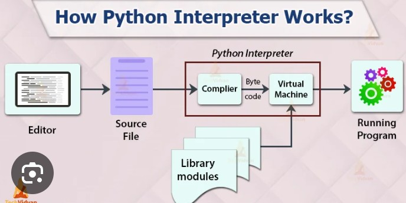
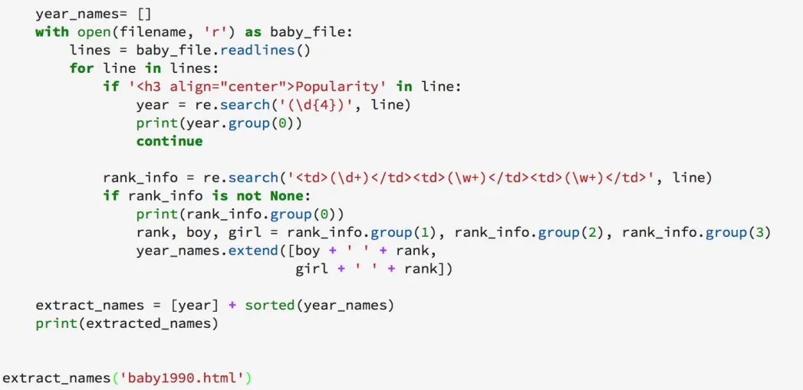
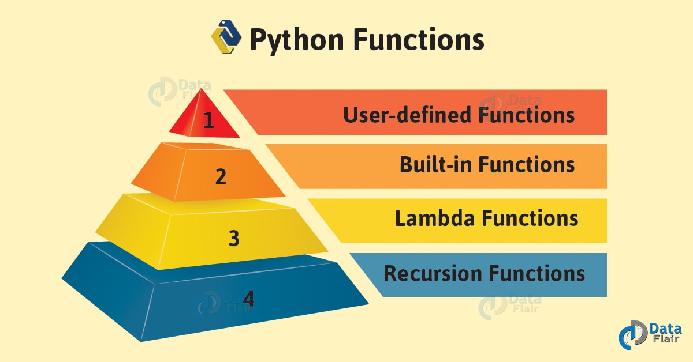
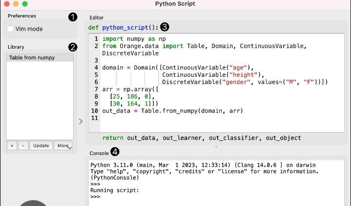
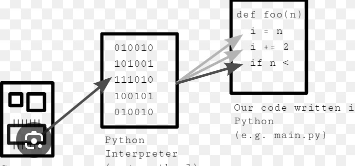
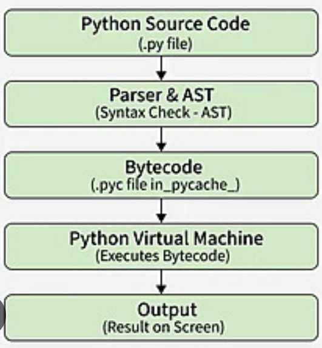

Functions are one of the most important concepts in Python programming. A function is a reusable block of code that performs a specific task. Instead of writing the same code repeatedly, developers write it once inside a function and call it whenever needed. Functions make programs shorter, cleaner, easier to understand, and easier to maintain.

A function is a named block of code that executes only when it is called. It can accept input values called parameters, perform a task, and optionally return a result.
Imagine you are making tea every morning. Instead of remembering every single step each time, you simply follow one routine. In programming, that routine is called a function.
Functions provide many advantages for programmers. They reduce code duplication, improve readability, and make debugging much easier. Professional software developers use functions in almost every project because they make applications modular and organized.

In Python, functions are created using the def keyword.
def greet():
print("Welcome to Python!")
Nothing happens until the function is called.
greet()
Output:
Welcome to Python!
Parameters allow functions to receive information from the user or another part of the program.
def greet(name):
print("Hello", name)
greet("Ali")
greet("Ahmed")
Output:
Hello Ali Hello Ahmed
This makes one function useful for many different inputs.

A function can receive more than one parameter.
def student(name, age):
print("Name:", name)
print("Age:", age)
student("Sara", 17)
Output:
Name: Sara Age: 17
Many functions calculate a result and return it using the return keyword.
def add(a, b):
return a + b
result = add(10, 15)
print(result)
Output:
25
Using return allows the result to be stored in a variable and used later in the program.

Suppose a school management system needs to calculate the total marks of hundreds of students. Instead of writing the addition code repeatedly, a function named calculate_total() can perform the calculation whenever required. This saves time and reduces errors.
Python allows functions to have default parameter values. If the user does not provide an argument, Python automatically uses the default value. This makes functions more flexible and easier to use.
def greet(name="Guest"):
print("Welcome", name)
greet()
greet("Ali")
Output:
Welcome Guest Welcome Ali

Keyword arguments allow values to be passed by parameter name instead of position. This improves readability and reduces mistakes.
def student(name, age):
print(name)
print(age)
student(age=18, name="Ahmed")
Output:
Ahmed 18
Normally, Python matches arguments according to their position.
def multiply(a, b):
print(a * b)
multiply(6, 4)
Output:
24
Sometimes you don't know how many arguments a function will receive. The *args parameter collects multiple values into a tuple.
def total(*numbers):
print(sum(numbers))
total(5,10)
total(5,10,15,20)
Output:
15 50

The **kwargs parameter collects keyword arguments into a dictionary.
def profile(**data):
print(data)
profile(name="Ali", age=20, city="Lahore")
Output:
{'name':'Ali','age':20,'city':'Lahore'}
A local variable is created inside a function and can only be used within that function.
def demo():
message = "Hello"
print(message)
demo()
Trying to use message outside the function will produce an error because it only exists inside the function.
A global variable is created outside every function and can be accessed by multiple functions.
name = "Python"
def show():
print(name)
show()
Output:
Python

A lambda function is a small anonymous function written in a single line. It is useful for short operations where creating a normal function is unnecessary.
square = lambda x: x * x print(square(8))
Output:
64
A recursive function is a function that calls itself until a stopping condition is reached. Recursion is commonly used in mathematical calculations and tree-based algorithms.
def countdown(n):
if n == 0:
print("Finished")
else:
print(n)
countdown(n-1)
countdown(5)
Imagine an online shopping website. Instead of writing separate code to calculate the total price for every customer, developers create a single function like calculate_total(). Every time a customer places an order, the same function is called with different values. This reduces repetition and keeps the program organized.
Python provides many built-in functions that are ready to use. These functions save time because developers do not need to create them manually. They perform common tasks such as displaying output, finding the length of data, sorting values, calculating sums, and converting data types.
numbers = [10, 20, 30, 40] print(len(numbers)) print(max(numbers)) print(min(numbers)) print(sum(numbers))
Output:
4 40 10 100

User-defined functions are functions created by programmers to solve specific problems. Unlike built-in functions, these are written according to the requirements of a project.
def area(length, width):
return length * width
print(area(8, 5))
Output:
40
A docstring is a special string written inside a function to explain its purpose. It helps other developers understand what the function does without reading all of the code.
def multiply(a, b):
"""Returns the product of two numbers."""
return a * b
Type hints make code easier to understand by indicating the expected data types of parameters and return values. Although Python does not enforce them, they improve code readability and help development tools detect mistakes.
def add(a: int, b: int) -> int:
return a + b
print(add(10, 15))
The following example demonstrates a simple calculator using functions.
def add(a, b):
return a + b
def subtract(a, b):
return a - b
def multiply(a, b):
return a * b
def divide(a, b):
return a / b
print(add(10, 5))
print(subtract(10, 5))
print(multiply(10, 5))
print(divide(10, 5))
Output:
15 5 50 2.0
If you are preparing for programming interviews, you should understand the following questions related to Python functions:

Functions are one of the most powerful features of Python. They help developers organize code, reduce repetition, improve readability, and make programs easier to maintain. Whether you are creating a simple calculator or a large web application, functions play an essential role in writing clean and professional code. By understanding parameters, return values, recursion, lambda functions, and best practices, beginners can build a strong programming foundation and prepare themselves for advanced Python concepts such as object-oriented programming, web development, automation, and artificial intelligence.
Congratulations! You have now learned the fundamentals of Python functions. Continue practicing by creating small projects, solving programming challenges, and applying functions in real-world applications. Consistent practice is the key to becoming a skilled Python developer.